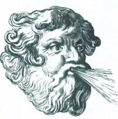
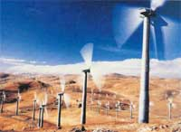

ENERGY UPDATE
After a decade of experiments, the wind industry is finally moving inland.
Like many revolutions that are more than a few years old, wind energy has remained in the mountains gaining strength. It is now ready to move inland, however, to capture the hearts and minds of the rest of the country. After a decade of experimenting with wind farms in the hills of California, plans are now underway to utilize wind resources in in Washington state and Montana. Wind farms are also in the planning stages in Minnesota, Wisconsin, Wyoming, North Dakota, New York, Hawaii, Iowa, and Texas. There is even one planned to be online by 1994 on a breakwater around the port of Los Angeles.
Industry Breakthroughs
During the late 1970s and early 1980s, the wind industry suffered the pangs of a premature birth. The need for new sources of energy prompted by the oil crunch of the late 1970s resulted in the application of immature technology, and from 1981 to 1985, attractive federal and state tax credits promoted a "wind rush" to build turbine at an average pace of five to six turbines a day.
The fledgling industry was plagued at the outset by the faulty notion that aviation technology was easily transferred to the design of wind turbines, and the misconception that bigger turbines would generate more electricity. Many of these early turbines stalled in high winds, while blades faltered in extreme weather.
Further damaging were opportunistic investors more interested in capitalizing on federal tax credits than on efficiently generating electricity. From 1981 to 1985, entrepreneurs were offered a 15 percent federal investment tax incentive to build wind farms. Unfortunately, this was valid even if wind farms never generated a kilowatt of electricity. Consequently, rich investors looked upon the wind industry as a lucrative tax shelter. According to the California Energy Commission, where 150 turbines were installed in that state in 1981, that number rose to 4,590 in 1985. When the tax credits were allowed to expire in 1985, the number of installations dropped by half the following year, and by 1987, the number of new installations had dropped to 1,392.
A federal law signed by George Bush last October, The 1992 Comprehensive National Energy Policy Act, allows a new tax credit for wind energy. This time, however, the tax credit is tied to electricity generated, not systems installed. The law allows a production tax credit of 1½ cents per kilowatt-hour of wind-generated electricity generated between January 1,1994 and June 30, 1999. The same law provides for greater access to use existing transmission lines in order to deliver electricity generated at wind farms to distant points of use.
Recent technical breakthrough have made wind-electric systems more efficient, however, and now, at about five cents per kilowatt-hour, they can compete economically with central coal-fired power plants for generating electricity in several parts of the United States. By 1994, with the economics expected to drop to four cents per kilowatt-hour, wind energy should be able to compete economically with central coal-fired power plants anywhere in the country.
As for improving turbine design, the U.S. Department of Energy, through the National Renewable Energy Laboratory (NREL) in Colorado, is presently investing millions of dollars in an intensive effort to nurture advanced wind-turbine designs. This includes a new $5 million testing center with 10 test pads for new turbines. This lab, which will be operational within the next two years, will grant space to people who come up with new designs to try out. As new effective designs are built, NREL will make this research available to the public. In addition, the lab will help new companies obtain licensing. This research effort has already paid off with technical breakthroughs such as new and effective air-foil blade designs and variable speed, and self-stalling turbines that can regulate their speed in low and high winds to increase their electrical output.
Of all the drawbacks to using wind industry, one of the largest cons is that residents who live near wind towers find them way too noisy and just plain ugly.
Another advantage for the wind industry is that studies of available wind resources in various parts of the country are at an advanced stage. Most of this resource mapping has been conducted by Pacific Northwest Laboratory (PNL), a national laboratory in Washington. PNL has been documenting wind resources throughout the country since the 1970s, and has maps that pinpoint the amount of wind resources a utility or developer can expect when planning a wind farm. They also identify what are called environmental exclusion areas, such as national or state parks that preclude wind development. These maps are available in grids of one-third degree longitude by one-quarter degree latitude.
More detailed maps are available from other sources that can provide even finer resolutions for proposed projects in some areas. New York, for example, recently completed a project using a computer-geographic information system (GIS) to plot wind resources in that state. Other projects in Oregon and the Midwest have resulted in even more clearly defined assessment of wind resources in those areas.
Updates from California & Montana
In California in 1990, according to the U.S. Department of Energy, utilities purchased enough electricity from wind farms to power the homes of more than a million people. The same wind farms avoided more than 2.5 billion pounds of carbon dioxide that would have been emitted if the electricity had been generated at a conventional coal-fired plant.
U. S. Wind Power is also the primary developer behind new wind projects in the Northwest, the only prospective developer so far with a signed contract. U.S. Wind power has a deal with the Bonneville Power Administration (a Department of Energy agency primarily responsible for marketing electricity produced by federally owned dams) to produce 50 megawatts of wind-generated electricity. The project will utilize about 275 turbines on approximately 2,000 acres on Rattlesnake Ridge near the confluence of the Snake River and Columbia River in Eastern Washington.
The motherload of wind potential for the Northwest is in Montana. In 1991 and 1992, U.S. Wind Power spent thousands of dollars to acquire leases and easements on large tracts of land in Montana for possible future wind development. In some of these places, such as near Livingston, Montana, winds often reach speeds of up to 90 miles per hour, blaring down the narrow corridor from Yellowstone Park through the Paradise Valley. The high winds can even pose driving hazards; wind socks on highways warn motorists about dangerous cross winds. Even greater wind resources are available for wind development on the Blackfoot Indian Reservation in northern Montana, where wind developers are already calling on tribal representatives to pitch wind farms on Native American lands. Montana's wind energy potential is estimated at 7,000 to 8,000 megawatts, most of which is available along the front range of the Northern Rockies.
Pros and Cons of the Industry
Wind energy seems poised to ride a wave of growing environmental concern that would wash away fossil fuels with their associated problems-acid rain, degraded air quality, and global warming-because wind may be able to generate megawatts of electricity without any emissions.
Moreover, a wind plant is modular. A plant can be on line in one year and then expanded as needed. On the other hand, packaged nuclear plants-from planning to operation-need at least 44 months and cannot be expanded once they are on line. Consequently, wind energy is quickly becoming an economical option to replace coal or nuclear power plants in utility plans wherever the wind resource is abundant.
Ironically, however, wind energy may have a few environmental problems of its own. Troubling concerns about the environmental impacts of large-scale wind power development may take the billow out of wind energy's sails just as the technology is taking off in the region.
Visual and noise pollution is one loudly voiced complaint. Residents who live near existing and proposed wind plants say the sight of wind towers lined up on a hill is just plain ugly and that the towers produce an irritating drone. Others worry about radiation effects, such as cancer, on livestock (currently, there is concern but no actual evidence of this) and TV or radio interference. They are also concerned that the electricity-producing wind turbines will require new high voltage lines across wild lands to transmit the electricity to distant markets. But the problem that everyone agrees is the largest hurdle right now is that turbine blades, towers, and transmission lines are deadly to birds, especially large birds of prey.
In California, falcons, hawks, and eagles prefer to hunt along the same ridge lines that are ideal for wind turbines. This makes them vulnerable when they fly too close to turbine blades. As Dr. Rich Ferguson of the Sierra Club of California told the wind industry at the Wind Power 1992 conference in Seattle, Washington last October, "These bird kills could be a real show stopper. If one of our members attends a public meeting with a dead eagle, you can forget about further support."
Biosystems, a natural resources consultant firm, has recently completed a two-year study of the problem at California's Altamont Pass. The study area included 7,000 turbines over 80 square miles and involved 13 species of birds including hawks, eagles, falcons, and vultures. During the study period, according to Pam Garcia of Biosystems, they found nearly 200 dead birds. Sixty-five percent of the dead birds were raptors (birds of prey). Fifty-five percent of the birds collided with turbine blades, while eight percent were electrocuted when they perched on exposed electrical wiring on pole risers or when outstretched wings inadvertently connected an electrical circuit between wires. These results and those of other studies have prompted action at several levels to find solutions. United States Wind Power alone spent close to a million dollars during the same year to study the problem.
In California, at Altamont Pass, regulations now require developers to "raptor-proof" their towers by insulating jumper wires and covering metal parts of insulators at $1,000 a turbine. This step alone cost close to $2 million in 1991. Proposed solutions include painting turbine blades bright colors and installing sonic whistles on towers to ward birds off. Or it may be as simple as allowing grass to grow around the base of turbines, camouflaging ground squirrels and other small mammals and thus discouraging birds of prey from flying too close to blades. While concern for bird populations is a focal point of controversy for future wind development, solutions to that problem may not end opposition to future wind farms in the Northwest.
Meeting Energy Needs
There are now deep concerns over the region's long-term effort to invest in energy conservation and energy efficiency. The power-planning process in the Northwest has brought together a unique coalition of utility planners, business people, government officials, and environmentalists to address these concerns. Throughout this collaborative effort, there is one view shared by all: The first step to meeting future energy needs is to first conserve energy and use it more efficiently.
Environmentalists have joined in with energy planners to support this approach because reducing energy consumption also reduces waste and pollution. The idea is: If you're hauling water with a leaky bucket, you don't make more trips to the well-you plug the bucket's holes. The arrival of wind power is considered a potential threat to derail that approach. Environmentalists have put the wind industry on notice that they will get the community's support as long as they avoid competing with conservation and energy efficiency efforts.
Some even fear that wind farms will stimulate unlimited growth in pristine parts of the Northwest when businesses arrive to take advantage of the cheap power. It is unlikely, though, that cheap electricity will be incentive enough to lure families or businesses onto the windswept plains of what was once known as the Great Desert.
What is more likely is that there will be the need to build new transmission lines to carry the generated electricity to the south and on the coasts. This is in order to augment the present lines now operating at capacity so they will deliver electricity to metropolitan areas from coal-fired plants. Siting such new transmission lines around or through wild lands and established communities could prove expensive and politically difficult.
While the technical revolution to make wind power competitive is nearly won, the industry still has to deal with the practical problems, while continuing to allay the fears discussed if wind power is to receive the overwhelming support that it deserves. The next battleground for these issues will be the Northwest, where wind power will hopefully win over residents so that a wind energy revolution can begin.
Bionote: George Everett is a free-lance writer who has written on energy and environmental topics in previous stories for Backpacker, Canoe, The Neighborhood Works, and Trilogy.
Resources:
For more information, you can contact the following wind energy sources:
American Wind Energy Association
777 North Capitol St., NE, Suite. 805
Washington, DC 20002
202/408-8988
This trade association promotes the development, adoption, and commercialization of wind energy technologies.
National Renewable Energy
Laboratory
1617 Cole Blvd.
Golden, CO 80401
303/231-1000
This national laboratory conducts technical research and licensing of wind technologies for the U.S. Department of Energy
|
 WARREN GRETZ, NREL |
 |
|